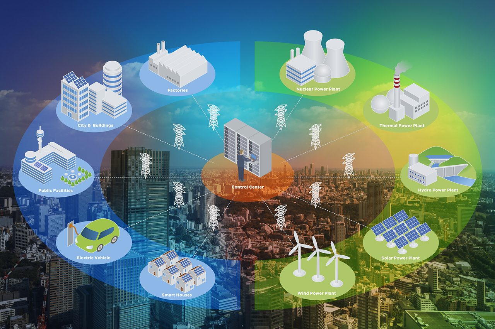
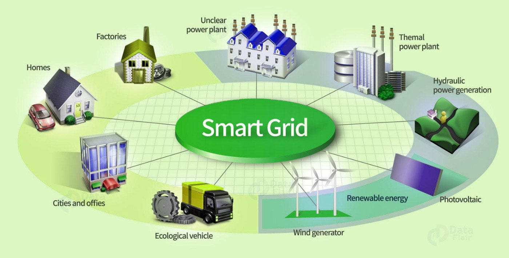
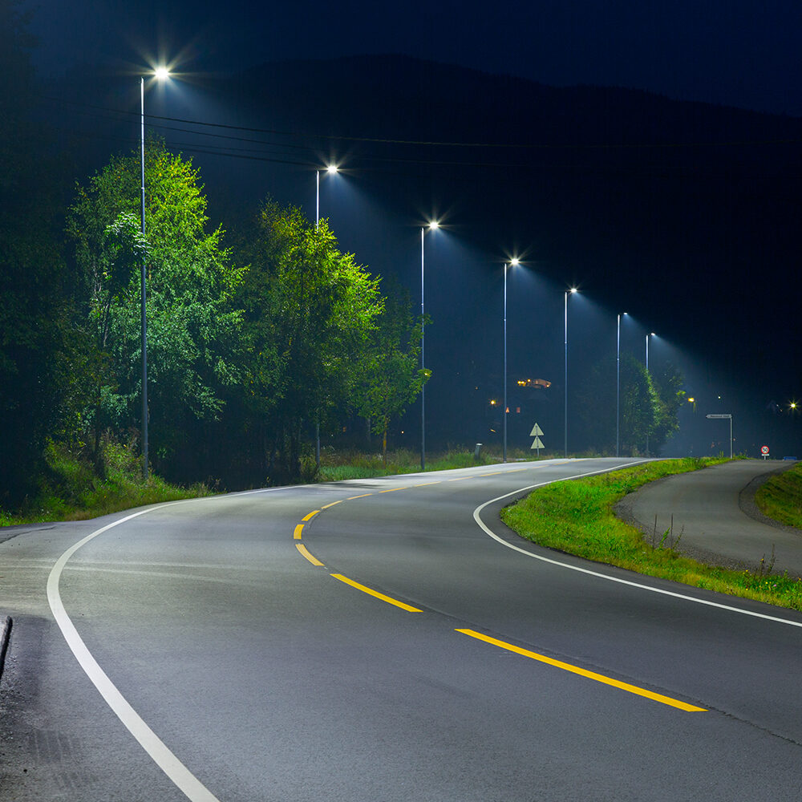
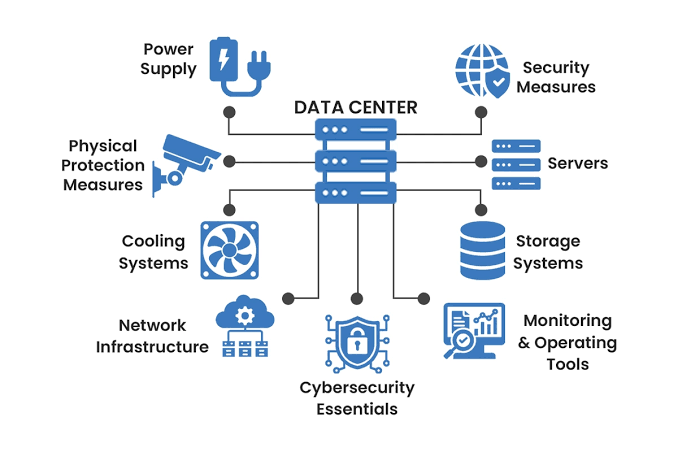
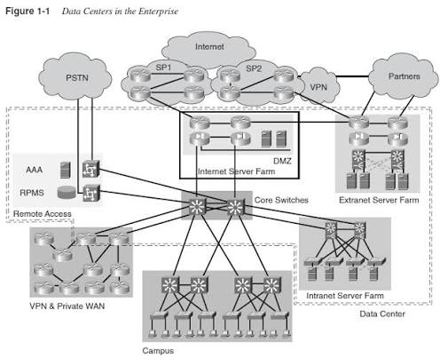

Smart City Initiatives
Smart City Initiatives

IoT-Enabled Grid
Deploying interconnected smart sensors across the city layout to monitor structural safety, water networks, and air quality indexes in real-time.
Smart City Initiatives

IoT-Enabled Grid
Deploying interconnected smart sensors across the city layout to monitor structural safety, water networks, and air quality indexes in real-time.

Smart Streetlighting
Automated LED lighting corridors that adjust brightness levels adaptively based on foot traffic, reducing energy costs by over 40%.

Unified Data Center
A centralized data infrastructure linking municipal departments to facilitate seamless cross-functional analysis and immediate emergency responses.

Smart Streetlighting
Automated LED lighting corridors that adjust brightness levels adaptively based on foot traffic, reducing energy costs by over 40%.

Unified Data Center
A centralized data infrastructure linking municipal departments to facilitate seamless cross-functional analysis and immediate emergency responses.
Intelligent Transportation
Real-Time Transit Logistics
Track live locations, arrival updates, and passenger capacities of all city electric buses and rapid rail networks via interactive maps.
EV Charging Infrastructure
A comprehensive grid of fast-charging points optimized through dynamic pricing models based on local power grid demands.
Adaptive Traffic Management
AI-driven traffic light cycles that dynamically adjust timing intervals based on live camera feeds to minimize congestion spikes.
Sustainable Urban Development
Renewable Energy Microgrids
Utilizing rooftop solar panel arrays and local wind turbines to power community municipal buildings and water treatment centers sustainably.
Automated Waste Logistics
Smart garbage bins equipped with filling sensors to map out precise, fuel-efficient collections for waste management trucks.
Urban Canopy Framework
Integrating vertical gardens and rooftop vegetation across architectural structures to lower urban heat island outcomes naturally.